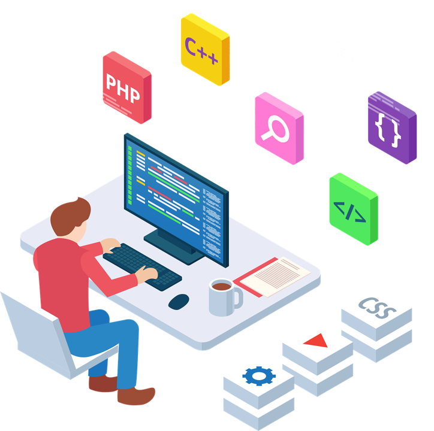
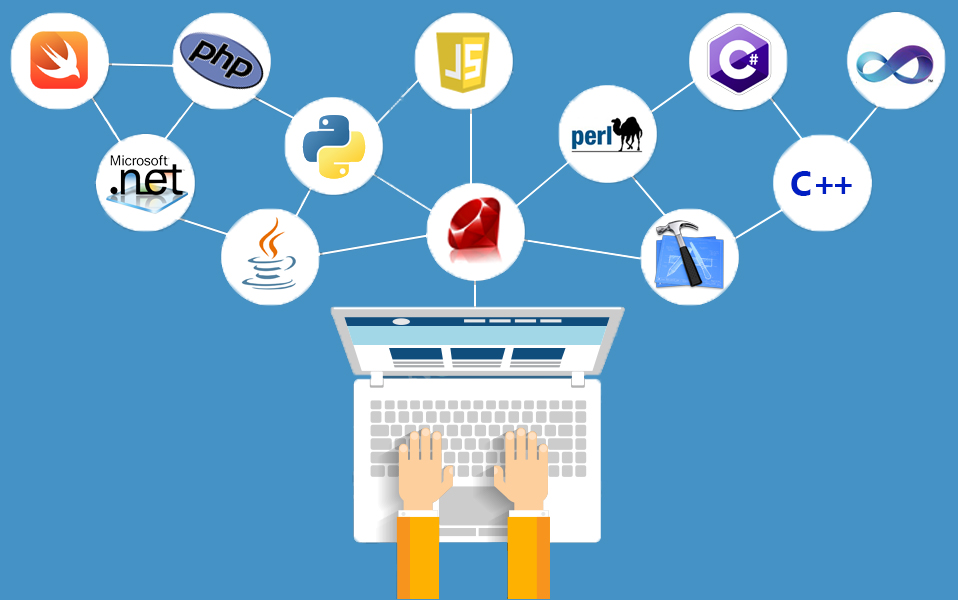

Desarrollo Full Stack


El curso de Desarrollo Full Stack está diseñado para alumnos que quieren aprender a crear aplicaciones web
completas, comprendiendo tanto la parte visual que utiliza el usuario como la parte interna que permite que
una aplicación funcione correctamente.
Durante esta formación, el alumno adquiere una visión global del desarrollo web y aprende cómo se
estructuran los proyectos digitales desde sus bases.
Contenido del curso
En este curso se trabajan los fundamentos necesarios para comenzar en el desarrollo web:
- Estructura de una página web.
- Uso correcto de etiquetas HTML.
- Organización del contenido.
- Introducción al desarrollo frontend.
- Bases del desarrollo backend.
- Conexión entre la parte visual y la lógica de una aplicación.
- Buenas prácticas para crear proyectos web ordenados.
Objetivo del curso
El objetivo principal del curso es que el alumno entienda cómo se construye una aplicación web desde cero y
pueda avanzar hacia perfiles profesionales relacionados con el desarrollo Full Stack.